| Cause | Deaths |
|---|---|
| Preventable disease | 14476 |
| Wounds | 1758 |
| Other | 1748 |
5. JASP & Visualization
In this lecture we aim to:
- Introduce JASP
- Descriptive statistics
- Data visualizations
Reading: Chapters 4 (§4.1–4.10), 5 (§5.1–5.6)
JASP
Why JASP?
- User-friendly, intuitive interface
- Open-source (free)
- Reproducible analyses (easy to share)
- Better than IBM’s SPSS for transparency and workflow
- Integrates with R for advanced users
Getting Started with JASP
- Download from jasp-stats.org
- Open JASP, load your dataset (.jasp, .csv, .sav, etc.)
- Familiarize with the interface: Data view, Input panel, Output panel
Two modes: data editor (view and edit) and analysis mode.
The start-up window

The data library

Loading Data in JASP
- Click Open > select your file
- Data appears in spreadsheet view
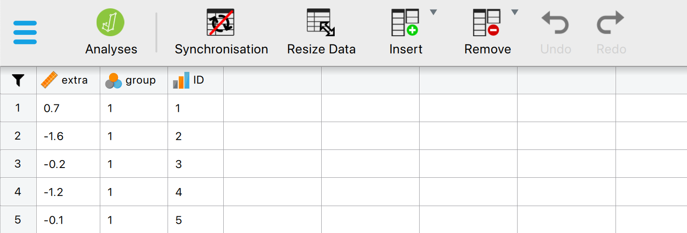
Two file formats
.csv
A lightweight file format that contains only the raw data.
Opens in virtually anything: Excel, R, SPSS
.jasp
Contains the original data, the results, and the settings that created them.
Ideal for sharing your research.
Sometimes you’ll see a .sav file, previously used in SPSS.
Variable settings
Doubleclick a column name to open its settings. The measurement level you set here decides how JASP treats your variable.
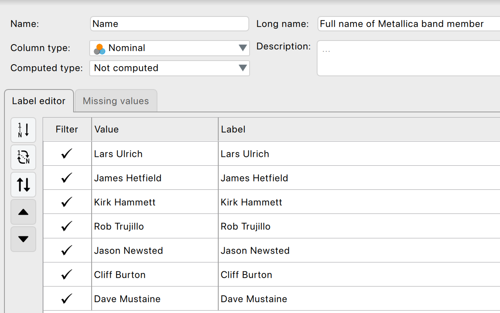
Ordinal variables
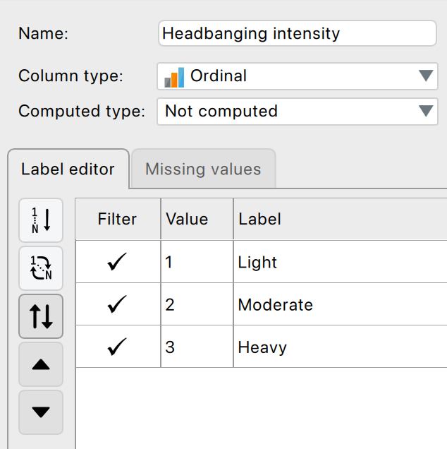
Computing a new variable
Drag and drop, no syntax required.
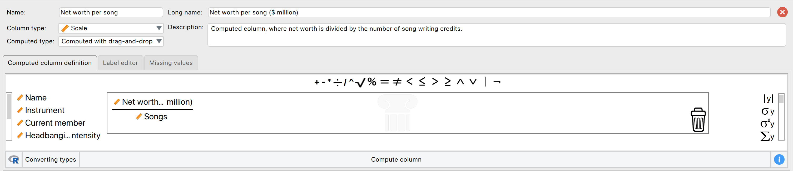
Missing values
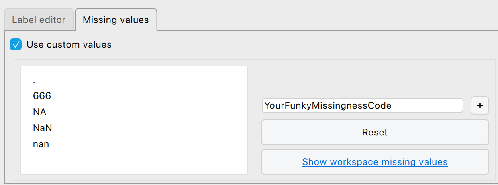
Descriptive Statistics in JASP
- Go to Descriptives > select variables
- Options: mean, median, SD, min, max, quartiles
- Output updates instantly

The output window
- Updates in real time
- Tables already in APA format, so publication ready
- ▼ dropdown: copy to Word/PowerPoint, save a plot, open the plot editor
- Annotate your own output
Annotated output
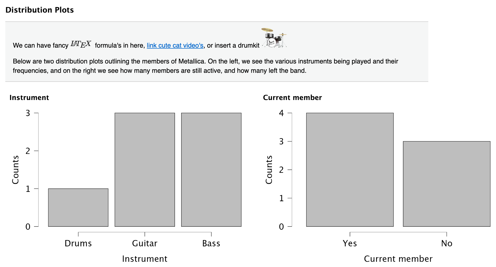
Saving and exporting
- Save (
Ctrl/Cmd + S) writes a.jaspfile: data, output and settings - Export Data writes a plain
.csv - Export Results writes
.htmlor.pdf, which anyone can open without JASP
See discoverjasp.com for examples.
Filtering your data
Two routes to using only part of your data.
Using the filter
- Funnel icon above the row numbers
- Drag variables and operators into the box
- Scale data
- Categorical data
Using variable settings
- Doubleclick the column name
- Untick values to leave out
- Filter by group
- Filtered rows struck through, analyses update immediately
- Nothing is deleted
Getting help
- JASP Video Library
- The book
Visualization
Why Visualize Data?
- Quick overview of the data
- Spot patterns, outliers, or errors
- Invite the reader
Why Visualize Data?
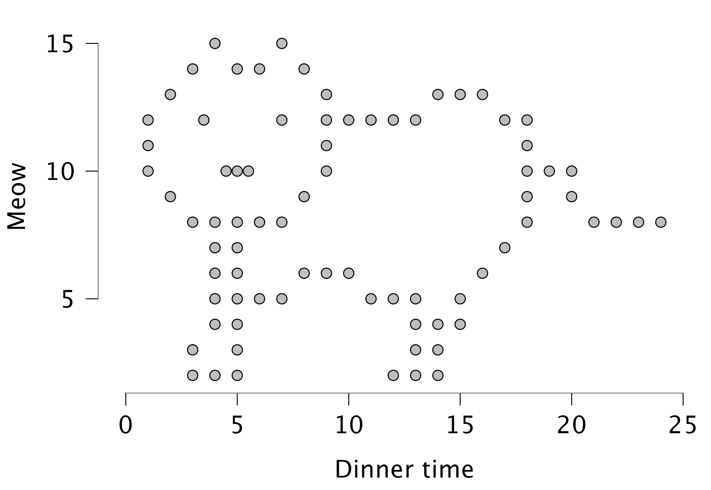
Scutari, 1854
- Military hospital, Crimean War
- Recorded every death and its cause
- Two years of counting:
- Infection killed far more than the enemy did
- Sanitary Commission arrived March 1855
- Later the first woman elected to the Statistical Society
The diagram
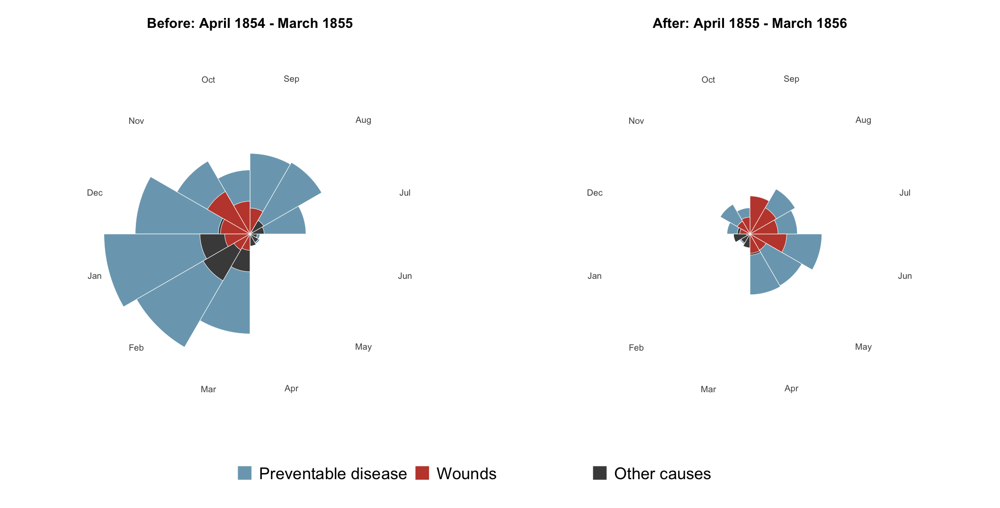
Each wedge is a month; its area is the death rate.
Different types of graphs in JASP
- Distribution plots (basic plots)
- Frequency plot when nominal
- Histogram when scale/ordinal
- Correlation plots (basic plots)
- Scatter plots (customizable plots)
- Raincloud plots
Boxplots: Visualizing Spread and Outliers
- Shows median, quartiles, and outliers
- Useful for comparing groups
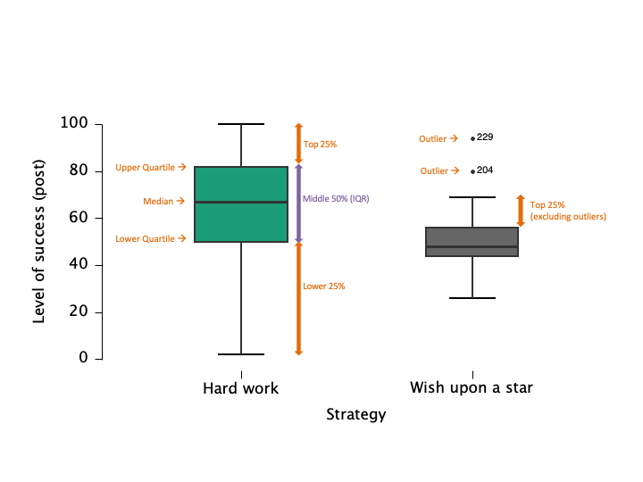
Raincloud plots: Boxplots + Raw Data
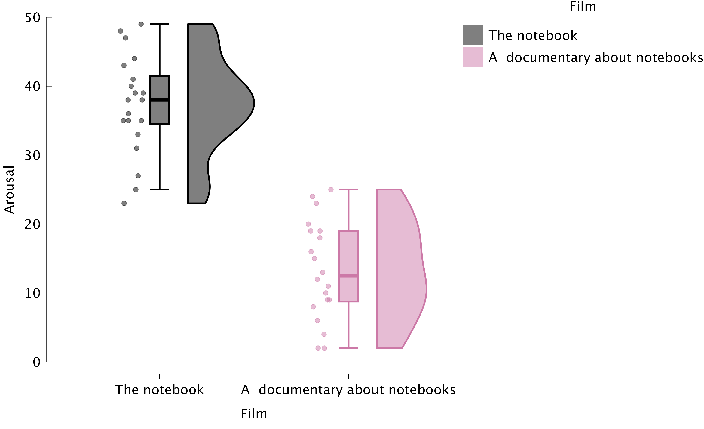
Critically Assess Graphs
- Are axes labelled (variable, units)?
- Are axes broken/equally spaced?
- Are error bars (e.g., confidence intervals) included where relevant?
Best practices
- Use clear labels and titles
- Avoid unnecessary 3D effects
- Choose appropriate scales
- Check for misleading representations
Labels and axes
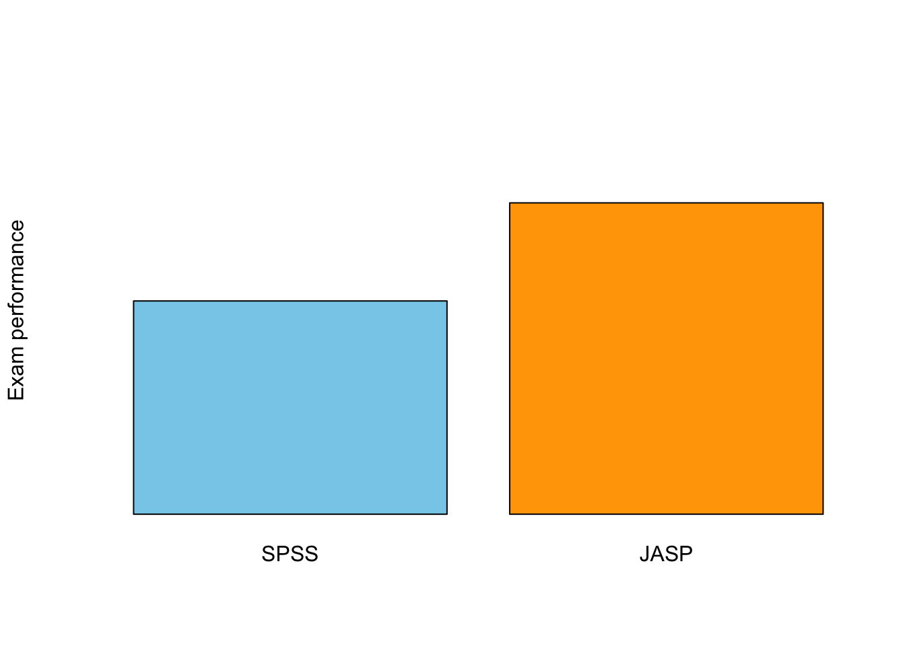
Scale Matters
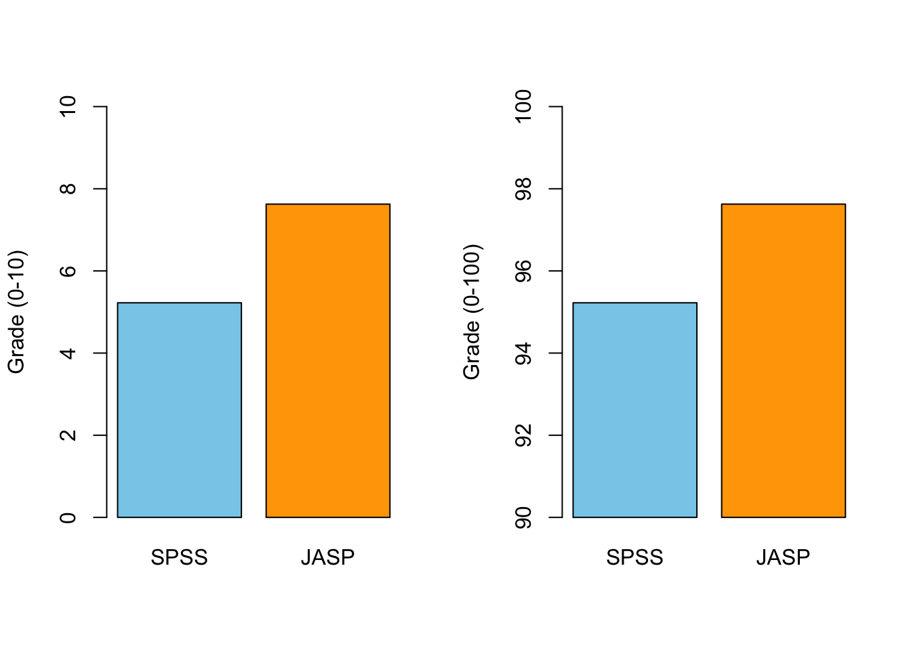
Error Bars!
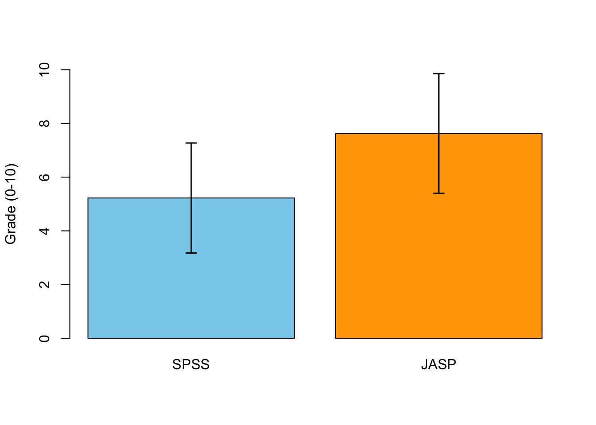
What is the plot for?
Tufte’s principles, as Field lists them:
- Show the data, and avoid distorting it
- Many numbers, minimum ink
- Encourage the reader to compare
- Reveal the underlying message
In practice:
- Cut the chartjunk: 3-D effects, gradients, decorative fills
- Colour marks the one thing you want noticed, not decoration
- Decide the message first, then build the plot around it
Using plots to predict
28 January 1986
- Night before the Challenger launch
- Would the cold damage the O-ring seals?
- Evidence: damage on previous flights, by launch temperature
Tomorrow’s forecast: -0.5°C. Should they launch?
The evidence they reviewed
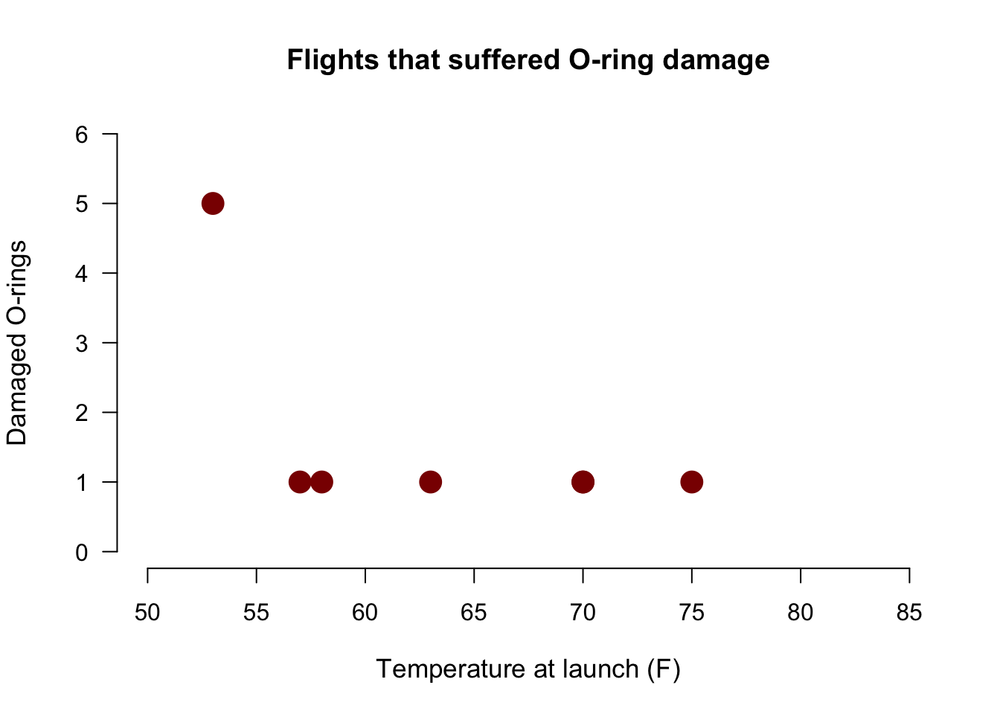
The flights that were excluded
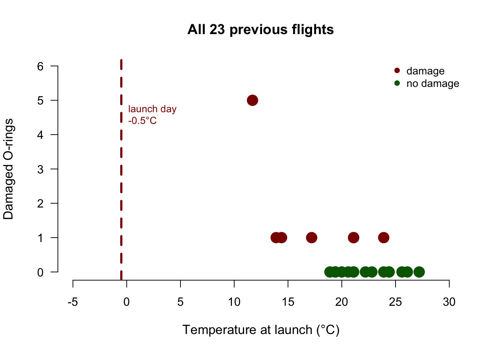
What the plot could not say
- 7 damaged flights only: \(r = -0.58\), \(p = .17\)
- All 23 flights: \(r = -0.64\), \(p = .001\)
- Launch day: 12°C colder than any data point, so can you realistically extrapolate??
Closing
Next Week
- Variance and z-scores
- The t-distribution
- Correlation
- How it works
- Controlling for a third variable
Recommended Exercises
Contact